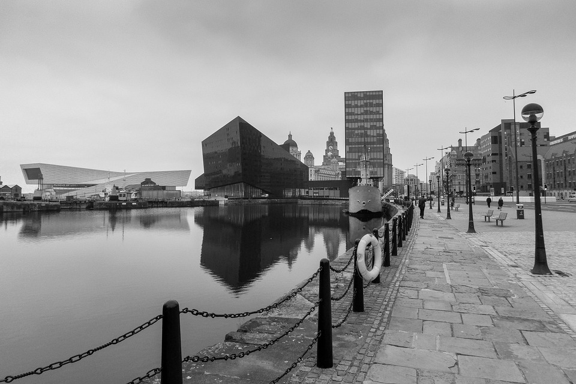

Sobre a Fotógrafa
Victoria Island, conhecida mundialmente como a "Rainha das Sombras", é uma fotógrafa cujos trabalhos transcendem o ordinário, mergulhando profundamente em cenários sombrios e atmosféricos. Nascida em Edimburgo, Escócia, Victoria cresceu cercada pelas paisagens melancólicas e nevoentas de sua terra natal, o que influenciou seu amor pelo lado mais obscuro da arte.
Desde jovem, Victoria demonstrou uma paixão inata pela fotografia. Com uma câmera antiga que encontrou no sótão da casa de seus avós, ela começou a capturar imagens que refletiam sua fascinação por histórias góticas e cenários misteriosos. Suas fotografias iniciais, feitas nos becos escuros e castelos abandonados de Edimburgo, já revelavam um talento singular para capturar a beleza na escuridão.
Após completar seu bacharelado em Belas Artes na University of Edinburgh, Victoria decidiu aprofundar seus conhecimentos em fotografia e se mudou para Londres, onde concluiu um mestrado no prestigiado Royal College of Art. Durante seus anos acadêmicos, ela desenvolveu um estilo único, caracterizado por uma mistura de realismo sombrio e elementos surreais, frequentemente inspirados em contos de fadas góticos e mitologias antigas.
A obra de Victoria Island rapidamente ganhou reconhecimento internacional. Suas exposições, como "Nocturnal Whispers" e "Gothic Dreams", foram aclamadas pela crítica e atraíram multidões em galerias de arte de todo o mundo, desde Nova York a Tóquio. Ela se tornou uma figura proeminente no movimento dark da fotografia contemporânea, sendo frequentemente convidada para colaborar em projetos editoriais, capas de álbuns e campanhas publicitárias de marcas de moda alternativas.
Além de sua carreira fotográfica, Victoria é uma defensora apaixonada da preservação de locais históricos e abandonados. Parte de seu trabalho envolve a documentação desses locais, capturando sua beleza antes que desapareçam para sempre. Ela também ministra workshops e palestras, compartilhando suas técnicas e inspirando a próxima geração de fotógrafos a explorar o lado sombrio da arte.
Victoria Island continua a residir em Edimburgo, onde encontra inspiração nas paisagens dramáticas e nas histórias antigas da Escócia. Com uma câmera sempre à mão e uma mente constantemente criando novas visões, ela permanece uma força inovadora e enigmática no mundo da fotografia dark.
Cenários Favoritos
Victoria Island tem uma predileção por cenários que evocam uma sensação de mistério e melancolia. Suas fotografias frequentemente capturam a essência de locais abandonados, onde o tempo parece ter parado. Castelos em ruínas, florestas envoltas em neblina e cemitérios antigos são alguns dos lugares favoritos de Victoria. Ela busca a beleza na decadência, transformando a desolação em arte.
Os ambientes urbanos abandonados, como fábricas desativadas e edifícios esquecidos, também são fontes constantes de inspiração. Ela adora explorar esses lugares, descobrindo histórias ocultas nas sombras e retratando a luta entre a natureza e a civilização.
Além disso, Victoria é fascinada pela natureza selvagem e indomada. Ela frequentemente se aventura em paisagens remotas e desoladas, capturando a imponência das montanhas enevoadas, lagos sombrios e florestas densas. A escuridão e a luz se entrelaçam em suas imagens, criando um contraste poderoso que atrai o olhar e instiga a imaginação.